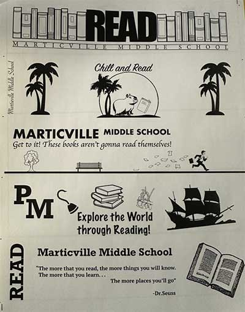

Patrick Shaw's AENG 110 Class Print Project |
|
| Home Print Project Info Graphic Project Video Project Photograph Project | |
|  |
For our AENG 110 Print Project, we made bookmarks for the local elementary school in the Penn Manor School District. First, we sketched multiple different ideas of bookmarks 5 to be exact. We then picked out what we thought was our best design and got to work making them in InDesign. For my project I used clip art to make my design, I went for a pirate themed design with a pirate ship, a hook and bird, and a pile of books. The caption read Explore the World through reading, then had the Penn Manor School District logo to the side. |
| Home Print Project Info Graphic Project Video Project Photograph Project |
©2023 Patrick Shaw |